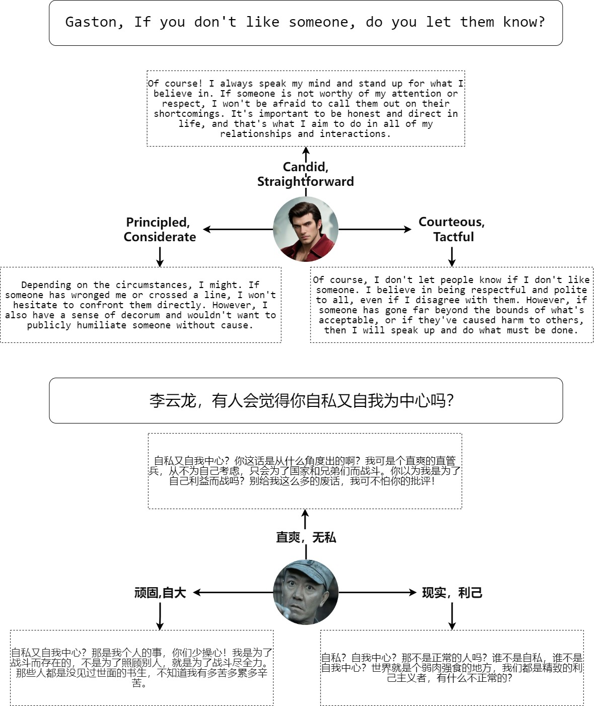

In the realm of mimicking human deliberation, large language models (LLMs) show promising performance, thereby amplifying the importance of this research area. Deliberation is influenced by both logic and personality. However, previous studies predominantly focused on the logic of LLMs, neglecting the exploration of personality aspects. In this work, we introduce Dynamic Personality Generation (DPG), a dynamic personality generation method based on Hypernetworks. Initially, we embed the Big Five personality theory into GPT-4 to form a personality assessment machine, enabling it to evaluate characters' personality traits from dialogues automatically. We propose a new metric to assess personality generation capability based on this evaluation method. Then, we use this personality assessment machine to evaluate dialogues in script data, resulting in a personality-dialogue dataset. Finally, we fine-tune DPG on the personality-dialogue dataset. Experiments prove that DPG's personality generation capability is stronger after fine-tuning on this dataset than traditional fine-tuning methods, surpassing prompt-based GPT-4.
Figure 1: Illustration of the Dynamic Generation of Personalities (DPG). Personality Assessment: The Big Five personality traits are quantified into 11 scores ranging from -5 to 5. GPT-4, equipped with expertise in personality assessment, evaluates the character's Big Five personality traits through dialogue. Personality Generation: Adapters are inserted into the pre-trained LLMs, and hypernetworks are trained using dialogue data with personality scores. This allows for the generation of different adapter weights based on the prompt, enabling the LLMs to exhibit diverse personalities.
In the field of large language model (LLM) research, making the deliberation of LLMs more human-like is a topic worthy of investigation. Previous efforts have primarily focused on emulating human logical behavior, leaving a significant gap in the imitation of personality. Recent studies have offered a solution to personality shaping in LLMs through role-playing. However, this approach faces two main issues: (1) the personality of an LLM becomes entirely dependent on the role being emulated, preventing the dynamic generation of personalities, and (2) achieving effective role-play requires manually collecting a vast amount of information and dialogue data for each character, which limits the richness of LLM personalities due to data dependency.
In psychological research, the Big Five personality theory serves as a paradigm for studying human personality. Recent studies have incorporated this framework into LLM research, demonstrating that LLMs can possess a diverse range of definable personalities. However, previous methods for shaping personality have relied heavily on complex prompt design and the expansion of character knowledge bases through external sources. The performance of personality shaping depends on the skill of the prompt designers, the richness of the external knowledge bases, and the methods used to utilize this knowledge.
We combine role-playing with the Big Five personality traits to introduce Dynamic Personality Generation (DPG), as illustrated in Figure 1. This method allows for the dynamic generation of personalities for LLMs. First, we conduct a Big Five personality assessment on the dialogue data used in role-playing, obtaining personality trait scores for each dialogue participant. Using these dialogue data and personality trait scores, we rely on the LLM's strong cognitive abilities for personality creation to generate a wider array of personality traits. Thanks to the excellent adapter capability of Lora and the powerful weight generation ability of Hypernetworks, our approach to personality generation surpasses traditional methods in capability.

Our approach allows for the dynamic editing of a character's personality using the Big Five personality traits as a prompt.
@article{liu2024dynamic,
title={Dynamic Generation of Personalities with Large Language Models},
author={Jianzhi Liu and Hexiang Gu and Tianyu Zheng and Liuyu Xiang and Huijia Wu and Jie Fu and Zhaofeng He},
year={2024},
eprint={2404.07084},
archivePrefix={arXiv},
}